solarGain pulls temperature, solar production, wind, and AC power history out of Home Assistant's recorder and renders one self-contained dashboard.html. No server, no chart library, no cloud, and nothing to install beyond Python.
Sees the heat tax. The attic peaks 20 to 29°F above the outside air and radiates into the rooms until late evening. The dashboard puts numbers and timestamps on that.
Uses the solar array as a sunshine meter. Panel production is the irradiance signal the thermal model fits against.
Models upgrades before you buy them. Ridge vent, R-38 insulation, and radiant barrier scenarios are fitted to your house's own measured response, uncertainty bands included, with editable cost assumptions for the payback math.
How it works

Point entities.py at your own sensors, drop a Home Assistant token in .env, and run ./run.sh. The user guide covers everything, and ./run.sh --mock builds the same demo you see here without touching a real house.